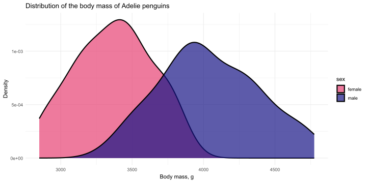
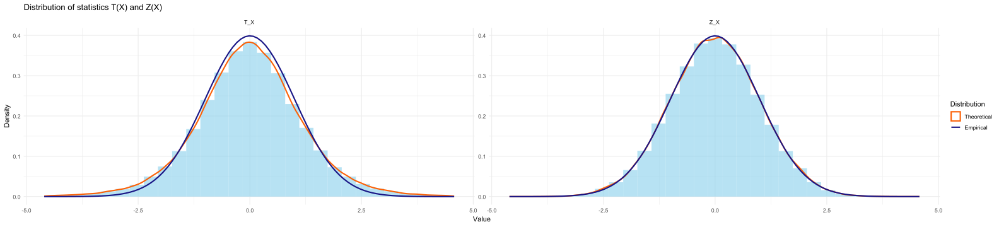
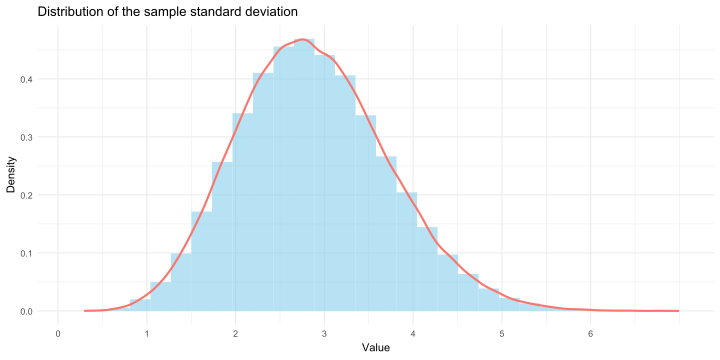

t-test
Probability and Statistics
Ihor Miroshnychenko
Kyiv School of Economics
\(t\)-test
📈 Task
Our company wants to switch from one DBMS to another. The main criterion for the transition is “the time spent per day loading new data.” If previously it took an average of 10 hours to update the database on a daily basis, we want to find a new DBMS that will do it faster than 7 hours.
To do this, we decided to transfer all the data to the new database under test. During one week, we will calculate the data loading time every day, and if the average time for updating is less than 7 hours, then we will completely switch to the new DBMS. Your task is to come up with a way to test the hypothesis that the new DBMS is better than the old one.
The sample is:
6.9, 6.45, 6.32, 6.88, 6.19, 7.13, 6.76— the time to load into the new database by day in hours.
📊 Hypothesis
\(X_1, X_2, ..., X_7\) — the time of loading new data into the DBMS in hours for each day of the experiment
\(X\) from the normal distribution.
Average time of loading into the DBMS: 6.66 hours.
\(H_0: \bar{X} \geq 7\)
\(H_1: \bar{X} < 7\)
📐 \(Z\)-test
- The statistic \(Z(X) = \sqrt{n}\dfrac{\overline X - \mu_0}{\sqrt{\sigma^2}}\)
Then you just need to calculate the following statistics: \[\sqrt{n}\dfrac{\overline X - 7}{\sqrt{\sigma^2}} \overset{H_0}{\sim} \mathcal{N}(0, 1)\]
Important
But there’s one problem: we don’t know \(\sigma^2\)!
📐 \(t'\)-test
\(\widehat{\sigma^2} =S^2 = \dfrac{1}{n - 1}\underset{i=1}{\overset{n}{\sum}}(X_i - \overline X)^2\)
Sample variance: 0.14
Let’s introduce a new test, the \(t\)-test, in which we substitute:
- \(T(X) := \sqrt{n}\dfrac{\overline X - \mu_0}{\sqrt{S^2}}\)
- \(T(X) \overset{H_0}{\sim} \mathcal{N}(0, 1)\) 🤨
It remains to be seen: Is it true that at \(H_0\) the distribution of the statistic T is standard normal?
📊 Distribution of statistics
- We will generate a \(X\) sample \(M\) times and calculate the statistic \(T(X)\) each time.
- As a result, we will get a sample of size \(M\) for \(T(X)\) and can draw a histogram of the distribution.
- We will also plot the distribution \(\mathcal{N}(0, 1)\) separately.
- If the empirical distribution visually coincides with the theoretical normal distribution, then everything is fine. If not, then we cannot simply replace \(\sigma^2\) with \(S^2\).
- Additionally, let’s see what happens if we replace \(T(X)\) with \(Z(X)\).
📊 Statistics distribution
Important
- The \(Z\)-test works here: \(\sqrt{n}\dfrac{\overline X - \mu_0}{\sqrt{\sigma^2}} \sim \mathcal{N}(0, 1)\).
- But this is not the case for \(T(X)\)! They are different! So the \(t'\)-test is not suitable for the original problem!
📝 Why did it happen?
- \(\sigma\) = 3
\(S^2\) is a random variable!
Let’s look at the distribution of \(\sqrt{S^2}\) on the same normal distribution.
Conclusion.
\(T(X) \overset{H_0}{\nsim} \mathcal{N}(0, 1)\) 😭
What is the distribution of \(T(X)\)?
Caution
Let \(X_1 \ldots X_n \sim \mathcal{N}(\mu, \sigma^2)\)
Let \(\xi_1 \ldots \xi_n \sim \mathcal{N}(0, 1)\). Then \(\eta=\xi_1^2 +\ ... +\xi_n^2 \sim \chi^2_n\), — \(\chi^2\) distribution with \(n\) degrees of freedom.
Then \(\underset{i=1}{\overset{n}{\sum}}\left(\xi_i - \overline \xi \right)^2 \sim \chi^2_{n-1}\). Proof 🫠
\(S^2_X = \dfrac{1}{n - 1}\underset{i=1}{\overset{n}{\sum}}(X_i - \overline X)^2\)
\(\xi_i := \dfrac{X_i - \mu}{\sigma} \sim \mathcal{N}(0, 1)\). Then \(S^2_{\xi} = \dfrac{1}{\sigma^2}S^2_X\).
So \(\dfrac{(n - 1)\cdot S^2_X}{\sigma^2} = \underset{i=1}{\overset{n}{\sum}}\left(\xi_i - \overline \xi \right)^2 \sim \chi^2_{n-1}\).
Let \(\xi \sim \mathcal{N}(0, 1), \eta \sim \chi^2_k\) and \(\xi\) with \(\eta\) be independent. Then the statistic \(\zeta = \dfrac{\xi}{\sqrt{\eta/k}} \sim t_{k}\) — from the Student’s distribution with \(k\) degrees of freedom.
- \(\xi := \sqrt{n}\dfrac{\overline X - \mu_0}{\sigma} \sim \mathcal{N}(0, 1)\)
- \(\eta := \dfrac{(n - 1)\cdot S^2_X}{\sigma^2} \sim \chi^2_{n-1}\)
- \(\xi\) and \(\eta\) are independent
- Then
\[ \begin{align} T = \sqrt{n}\dfrac{\overline X - \mu_0}{\sqrt{S^2}} = \frac{\sqrt{n}\dfrac{\overline X - \mu_0}{\sigma}}{\sqrt{\dfrac{(n - 1)\cdot S^2_X}{(n - 1)\sigma^2}}} = \dfrac{\xi}{\sqrt{\dfrac{\eta}{n-1}}} \sim t_{n - 1} \end{align} \]
📈 Problem and 📐 \(t\)-test
\(T = \sqrt{n}\dfrac{\overline X - \mu_0}{\sqrt{S^2}} \sim t_{n - 1}\) — taken from a Student’s distribution with \(n - 1\) degrees of freedom.
- X = 6.9, 6.45, 6.32, 6.88, 6.09, 7.13, 6.76
- \(n\) = 7
- \(S\) = 0.14
- \(t\)-statistic = -2.52
- \(t_{n - 1}\) = -1.94
- \(p\)-value = 0.0225
Confidence intervals
📊 Confidence interval for the mean: option 1
Confidence interval — set \(m\): the test does not reject \(H_0: \mu = m\) at the significance level \(\alpha\).
Let \(\mu\) be the true mean of the sample. We also know that for \(H_0: \sqrt{n}\dfrac{\overline X - m}{\sqrt{S^2}} \sim t_{n - 1}\).
We are interested in \(m\) such that: \(\left\{-t_{n-1, 1 - \frac{\alpha}{2}} < \sqrt{n}\dfrac{\overline X - m}{\sqrt{S^2}} < t_{n-1, 1 - \frac{\alpha}{2}} \right\}\), in which case the criterion will not be rejected.
Let’s write it so that only \(m\) remains in the center:
\[\left\{\overline X - \dfrac{t_{n - 1, 1 - \alpha/2} \sqrt{S^2}}{\sqrt{n}} < m < \overline X + \dfrac{t_{n - 1, 1 - \alpha/2} \sqrt{S^2}}{\sqrt{n}}\right\}\]
- Then the confidence interval:
\[CI_{\mu} = \left(\overline X \pm \dfrac{t_{n - 1, 1 - \alpha/2} \sqrt{S^2}}{\sqrt{n}} \right),\]
where \(S^2 = \dfrac{1}{n - 1}\underset{i=1}{\overset{n}{\sum}}(X_i - \overline X)^2\)
📊 Confidence interval for the mean: option 2
Classical definition of a confidence interval:
A confidence interval for a parameter \(\theta\) of confidence level \(1 - \alpha\) is a pair of statistics \(L(X), R(X)\) such that \(P(L(X) < \theta < R(X)) = 1 - \alpha\).
\[ \begin{align} &T(X) = \sqrt{n}\dfrac{\overline X - \mu}{\sqrt{S^2}} \sim t_{n - 1} \Rightarrow \\ &P\left(-t_{n - 1, 1-\alpha/2} < \sqrt{n}\dfrac{\overline X - \mu}{\sqrt{S^2}} < t_{n - 1, 1-\alpha/2} \right) = 1 - \alpha \Leftrightarrow \\ &P\left(\overline X - \dfrac{t_{n - 1, 1 - \alpha/2} \sqrt{S^2}}{\sqrt{n}} < \mu < \overline X + \dfrac{t_{n - 1, 1 - \alpha/2} \sqrt{S^2}}{\sqrt{n}} \right) = 1 - \alpha \end{align} \]
- Then the confidence interval:
\[CI_{\mu} = \left(\overline X \pm \dfrac{t_{n - 1, 1 - \alpha/2} \sqrt{S^2}}{\sqrt{n}} \right)\]
📈 Task and 📊 Confidence interval
\[CI_{\mu} = \left(\overline X \pm \dfrac{t_{n - 1, 1 - \alpha/2} \sqrt{S^2}}{\sqrt{n}} \right)\]
- X = 6.9, 6.45, 6.32, 6.88, 6.09, 7.13, 6.76
- \(\bar{X}\) = 6.65
- \(n\) = 7
- \(S\) = 0.37
- \(t_{n - 1, 1 - \alpha/2}\) = 2.45
Then the confidence interval for the mean is: 6.3051702, 6.9891155
Two-sample \(t\)-test. The task of AB testing
📊 Task
We have promotion services on our website. We want to start giving discounts on them to attract more people and start earning more money. To do this, we decided to conduct an AB test: We did not give discounts to one half of the users, and in the other half, we gave discounts to all new users. We need to understand whether we started to earn more money.
This time we have 2 samples: \(A\) - control, and \(B\) - test.
📊 Task
\[H_0: \mathbb{E} A = \mathbb{E} B \; \text{vs.} \; H_1: \mathbb{E}A < \mathbb{E} B\]
- Both samples are normal.
Then there are 2 criteria depending on our knowledge of variance:
\(\sigma^2_A = \sigma^2_B\).
Then:
- \(S^2_{full} = \dfrac{(N - 1)S^2_A + (M - 1)S^2_B}{N + M - 2}\), where N, M are the size of the control and test, respectively. And the criterion is as follows:
- \(T(A, B) = \dfrac{\overline A - \overline B}{S_{full}\sqrt{1/N + 1/M}} \overset{H_0}{\sim} T_{n + m - 2}\)
\(\sigma^2_A \neq \sigma^2_B\).
Then:
- \(T(A, B) = \dfrac{\overline A - \overline B}{\sqrt{S^2_{A}/N + S^2_{B}/M}} \overset{H_0}{\sim} T_{v}\)
- де \(v = \dfrac{\left(\dfrac{S^2_{A}}{N} + \dfrac{S^2_{B}}{M} \right)^2}{\left(\dfrac{(S^2_{A})^2}{N^2(N - 1)} + \dfrac{(S^2_{B})^2}{M^2(M-1)} \right)}\)
- At least 1 sample is abnormal.
Then the normal approximation with a large sample size, the \(t'\)-test criterion, comes into play:
- \(T(A, B) = \dfrac{\overline A - \overline B}{\sqrt{S^2_{A}/N + S^2_{B}/M}} \overset{H_0}{\sim} \mathcal{N}(0, 1)\)
Two-Sample \(t\)-test and penguins
- \(H_0\): \(\mu_m = \mu_f\)
- \(H_1\): \(\mu_m \neq \mu_f\)
\(T(A, B) =\) -13.13
\(p\)-value = 2.2206436^{-26}
\(CI_{\mu} =\) -776.2484388, -573.0666297

Probability and Statistics